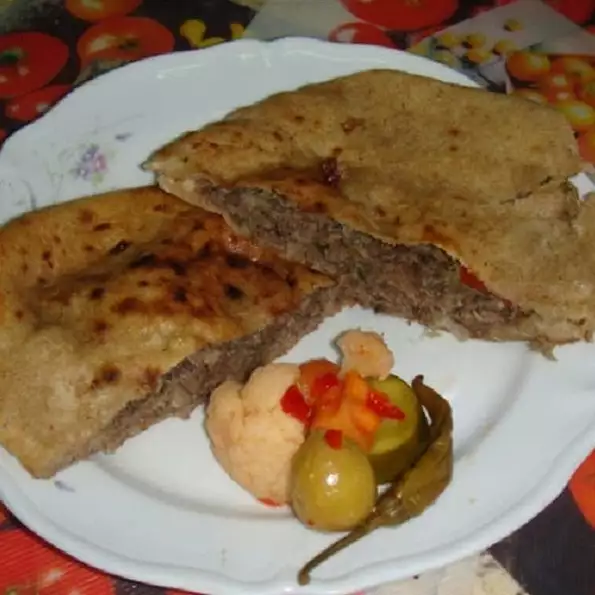

back to home
Hawawshy Recipe

Ingredients
- ½ pound ground beef
- 2 tomatoes, diced
- 1 large onion, diced
- 1 green bell pepper, diced
- 1 pinch paprika, or to taste
- 1 pinch ground coriander, or to taste
- 1 pinch ground cinnamon, or to taste
- 1 pinch ground nutmeg, or to taste
- salt and ground black pepper to taste
- 5 pita bread rounds, split
- 1 tablespoon corn oil
Directions
- Preheat the oven to 325 degrees F (165 degrees C).
- Heat a large skillet over medium-high heat. Cook and stir ground beef in the hot skillet until browned and crumbly, 5 to 7 minutes. Let cool slightly.
- Mix beef, tomatoes, onion, bell pepper, paprika, coriander, cinnamon, nutmeg, salt, and pepper together in a large bowl. Stuff mixture inside of pita bread rounds.
- Brush tops with corn oil and wrap each in aluminum foil. Place on a baking sheet.
- Bake in the preheated oven until toasted and vegetables are softened, about 30 minutes.
Cook's Note
You can use lamb or venison instead of ground beef if you like. You can use any spices you prefer.
Nutrition Facts
Per Serving
274 calories; protein 13.3g; carbohydrates 34.6g; fat 9.1g; cholesterol 28.3mg; sodium 330.1mg.